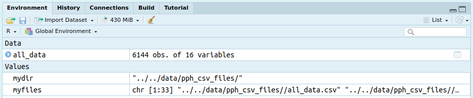
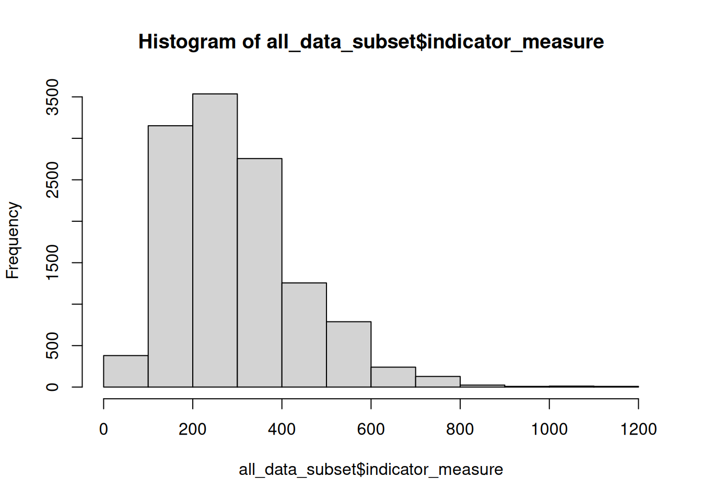
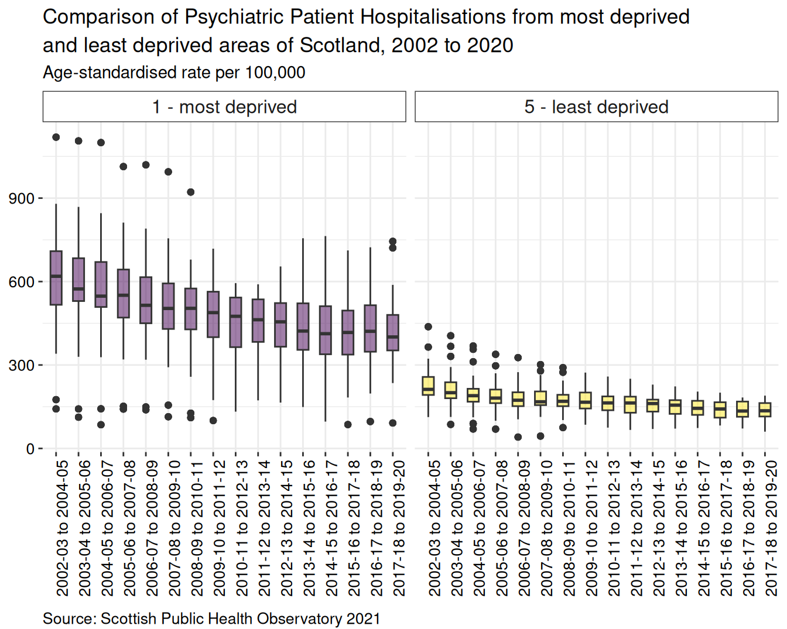
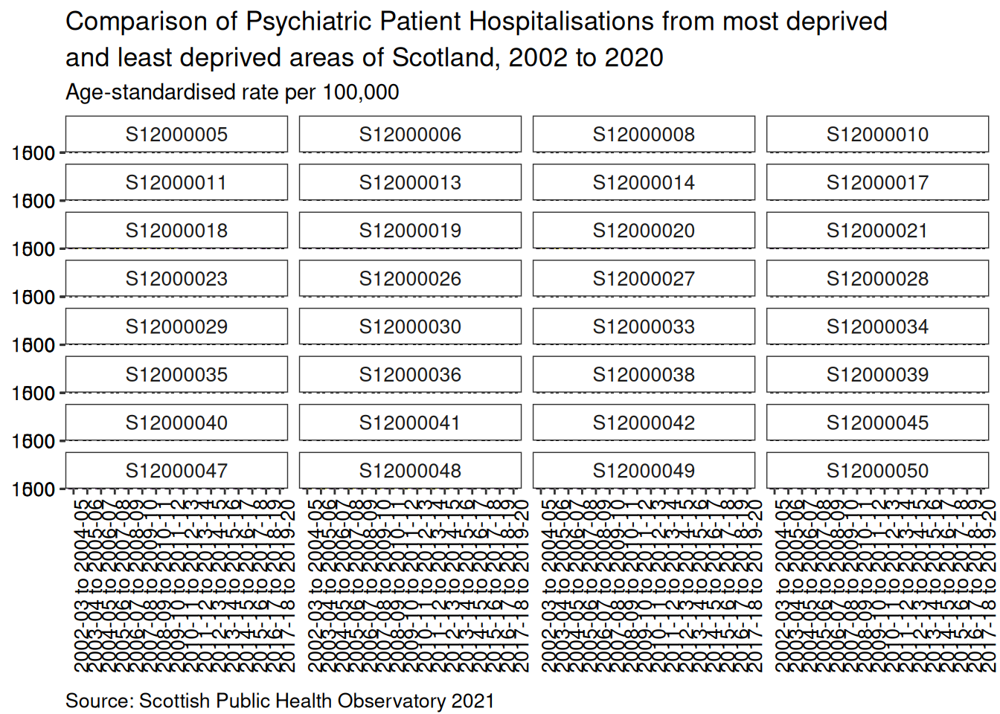
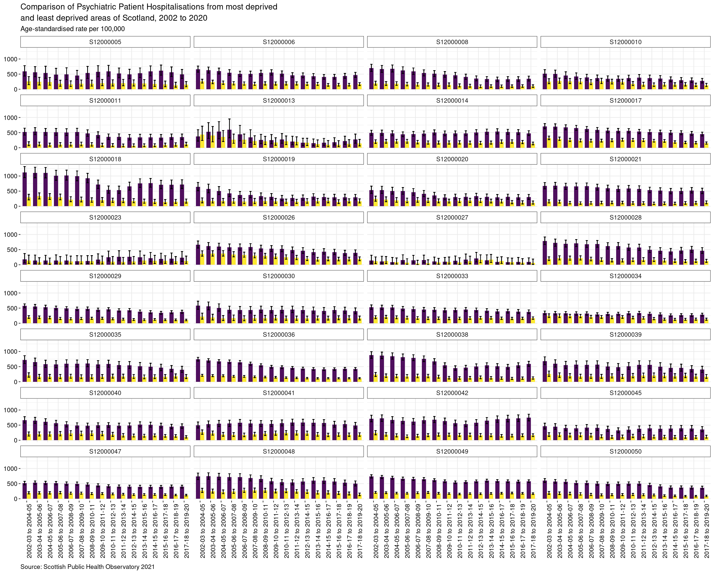

mydir = "../../data/pph_csv_files/"Patients Discharged from Psychiatric Hospitals in Scotland, 2002-2020
SIMD
mental health
inequality
deprivation
Summary of differences in discharges from psychiatric hospitals in Scotland, comparing people from least and most deprived areas
Overview
The aim of this dashboard project is to summarise the impact of deprivation on psychiatric patient hospitalizations across Scotland, using discharge data from the Scottish Public Health Observatory for the most recent period for which data are available: 2017-18 to 2019-20. The main outputs are a map and summary statistics to compare between the most deprived and least deprived areas across each of Scotland’s local authorities and health boards.
To produce the map, I used data of psychiatric patient hospitalization discharges from each council area in Scotland, including quintile data from the Scottish Index of Multiple Deprivation. These data can be downloaded from the Scottish Public Health Observatory 2021. Also necessary is a quality shapefile of Scotland, coded to include geometry linked to council area, available from https://www.spatialdata.gov.scot/geonetwork/srv/eng/catalog.search#/home.
About the data
Definition: Patients discharged from psychiatric hospitals: 3-year rolling average number and directly age-sex standardised rate per 100,000 population. All rates have been standardised against the European standard population(ESP2013) and 2011-base population estimates. Patient is selected only once per year, based on their discharge date. Values less than 10 are suppressed. No rounding. All age-groups and sexes.
Data Source: Public Health Scotland (SMR04)
Geography code: A standard code assigned to geographical areas, which in this case is council area
Numerator: Number of patients discharged from psychiatric hospitals; denominator: total population
Indicator-measure: Age-sex standardised rate per 100,000
Quintile: Based on the Scottish Index of Multiple Deprivation (SIMD), five categories of deprivation are used from 1 - most deprived (the 20% most deprived) to 5 - least deprived (the 20% least deprived). All other variables are aligned to these data, where applicable, specifically, geography code, numerator, indicator, and confidence intervals
Period: financial year from 2002/03-2019/20, 3-year aggregates
Confidence interval: Dobson’s method
File structures and set-up
When working on building these types of projects, I follow a file structure recommended in this r-bloggers post by Martin Chan, and shown in the image below.

Joining data as .csv files
The first step is to acquire the data from the Scottish Public Health Observatory as .csv files which are downloaded into pph_csv_files folders. I moved all separate files into a /data/pph_csv_files folder to keep them in one place. All time periods for all areas were initially chosen to ensure there would be sufficient data of an appropriate quality to be able to generate an interesting map.
- Create a collection of .csv files saved into the current directory, first by defining the working directory where the csv files are located.
- Then specify the filepath and filetypes to search for, and include the full file names in the object
myfiles = list.files(path = mydir, pattern = "*.csv", full.names = TRUE)- Inspect the object and check there are the correct number of files listed as the ones downloaded. You should also be able to see the number of files listed in the environment pane.
myfiles
- Load the
plyrandreadrpackages. Use theldplyfunction from theplyrpackage and ’read_csvfrom thereadrpackage to join all .csv files into one. Theshow_col_types = FALSEargument suppresses the output in the terminal.
library(plyr)
library(readr)
all_data = ldply(myfiles, readr::read_csv, show_col_types = FALSE)- View the first five rows and columns 2-5 of the data.
all_data[1:5, 2:5] geography_code quintile
1 S12000033 1 - most deprived
2 S12000033 2
3 S12000033 3
4 S12000033 4
5 S12000033 5 - least deprived
period numerator
1 2002/03 to 2004/05 financial years; 3-year aggregates 212.7
2 2002/03 to 2004/05 financial years; 3-year aggregates 173.0
3 2002/03 to 2004/05 financial years; 3-year aggregates 169.3
4 2002/03 to 2004/05 financial years; 3-year aggregates 82.3
5 2002/03 to 2004/05 financial years; 3-year aggregates 76.7- Create a tibble of the files.
all_data <- tibble::as_tibble(all_data)- A sample of the dataset is shown here to demonstrate the main columns to be used in this project. Using package
dplyrto firstselectthe columns of interest, thenfilterthe rows of interest - quintiles 1 and 5 - andslicethe first 10 rows. Each of these commands can be ‘piped’ (%>%from themagrittrpackage) through to packagekableExtrafor producing a neatly formatted table.
library(kableExtra)
dplyr::select(all_data, c("geography_code",
"quintile",
"period",
"numerator",
"indicator_measure",
"lower_confidence_interval",
"upper_confidence_interval")) %>%
filter(quintile %in% c("1 - most deprived",
"5 - least deprived")) %>%
slice(1:10) %>%
kableExtra::kbl() %>%
kable_material(c("striped", "hover"))| geography_code | quintile | period | numerator | indicator_measure | lower_confidence_interval | upper_confidence_interval |
|---|---|---|---|---|---|---|
| S12000033 | 1 - most deprived | 2002/03 to 2004/05 financial years; 3-year aggregates | 212.7 | 527.2 | 456.6 | 605.4 |
| S12000033 | 5 - least deprived | 2002/03 to 2004/05 financial years; 3-year aggregates | 76.7 | 197.3 | 153.1 | 249.6 |
| S12000033 | 1 - most deprived | 2003/04 to 2005/06 financial years; 3-year aggregates | 213.0 | 520.4 | 450.8 | 597.6 |
| S12000033 | 5 - least deprived | 2003/04 to 2005/06 financial years; 3-year aggregates | 78.7 | 207.5 | 162.0 | 261.4 |
| S12000033 | 1 - most deprived | 2004/05 to 2006/07 financial years; 3-year aggregates | 212.3 | 518.0 | 448.2 | 595.2 |
| S12000033 | 5 - least deprived | 2004/05 to 2006/07 financial years; 3-year aggregates | 72.0 | 191.6 | 148.1 | 243.4 |
| S12000033 | 1 - most deprived | 2005/06 to 2007/08 financial years; 3-year aggregates | 196.7 | 479.6 | 412.6 | 554.1 |
| S12000033 | 5 - least deprived | 2005/06 to 2007/08 financial years; 3-year aggregates | 68.3 | 181.6 | 139.3 | 232.2 |
| S12000033 | 1 - most deprived | 2006/07 to 2008/09 financial years; 3-year aggregates | 190.0 | 466.3 | 399.8 | 540.3 |
| S12000033 | 5 - least deprived | 2006/07 to 2008/09 financial years; 3-year aggregates | 64.7 | 169.0 | 129.0 | 217.1 |
- Create a back up data file of all combined files that R can read, and save in the same directory as the individual .csv files.
save(all_data, file = "../../data/pph_csv_files/all_data.rda")- Do the same in .csv format, using the
readrpackage andwrite_excel_csvfunction.
readr::write_excel_csv(all_data, "../../data/pph_csv_files/all_data.csv")Data checking and cleaning
Before thinking of analysis, I like to carry out various checks to make sure the data object(s) is (are) of the type I need and coded appropriately, for example, categories are factors, numeric and integer data are recognised as such. As these data are cleaned and released for public use, there is very little to do here.
Standard checks I do:
- Check the type of object to make sure data are in the correct format. In this case, tibble and dataframe.
class(all_data)[1] "tbl_df" "tbl" "data.frame"- Look at the column names to make sure there are no errors and identify if any names need to be changed for clarity.
names(all_data) [1] "indicator"
[2] "geography_code"
[3] "quintile"
[4] "period"
[5] "numerator"
[6] "indicator_measure"
[7] "lower_confidence_interval"
[8] "upper_confidence_interval"
[9] "definition"
[10] "relative_inequality_gap"
[11] "lower_confidence_interval_relative_ineq"
[12] "upper_confidence_interval_relative_ineq"
[13] "absolute_inequality_gap"
[14] "lower_confidence_interval_absolute_ineq"
[15] "upper_confidence_interval_absolute_ineq"
[16] "population_attributable_risk" - Check dimensions of the dataframe object. Here there should be 3072 rows, and 16 columns.
dim(all_data)[1] 12288 16- Check the data structure to see if variables are categorised correctly.
str(all_data)tibble [12,288 × 16] (S3: tbl_df/tbl/data.frame)
$ indicator : chr [1:12288] "Psychiatric patient hospitalisations" "Psychiatric patient hospitalisations" "Psychiatric patient hospitalisations" "Psychiatric patient hospitalisations" ...
$ geography_code : chr [1:12288] "S12000033" "S12000033" "S12000033" "S12000033" ...
$ quintile : chr [1:12288] "1 - most deprived" "2" "3" "4" ...
$ period : chr [1:12288] "2002/03 to 2004/05 financial years; 3-year aggregates" "2002/03 to 2004/05 financial years; 3-year aggregates" "2002/03 to 2004/05 financial years; 3-year aggregates" "2002/03 to 2004/05 financial years; 3-year aggregates" ...
$ numerator : num [1:12288] 212.7 173 169.3 82.3 76.7 ...
$ indicator_measure : num [1:12288] 527 416 425 221 197 ...
$ lower_confidence_interval : num [1:12288] 457 356 360 173 153 ...
$ upper_confidence_interval : num [1:12288] 605 484 498 278 250 ...
$ definition : chr [1:12288] "Age-sex standardised rate per 100,000" "Age-sex standardised rate per 100,000" "Age-sex standardised rate per 100,000" "Age-sex standardised rate per 100,000" ...
$ relative_inequality_gap : num [1:12288] NA NA NA NA NA 60.8 NA NA NA NA ...
$ lower_confidence_interval_relative_ineq: num [1:12288] NA NA NA NA NA 23.8 NA NA NA NA ...
$ upper_confidence_interval_relative_ineq: num [1:12288] NA NA NA NA NA 97.8 NA NA NA NA ...
$ absolute_inequality_gap : num [1:12288] NA NA NA NA NA ...
$ lower_confidence_interval_absolute_ineq: num [1:12288] NA NA NA NA NA ...
$ upper_confidence_interval_absolute_ineq: num [1:12288] NA NA NA NA NA ...
$ population_attributable_risk : num [1:12288] NA NA NA NA NA 44.6 NA NA NA NA ...- Generate summary statistics to check for e.g. potential anomalies, missing values, minimum and maximum values, relationship between median and mean.
summary(all_data) indicator geography_code quintile period
Length:12288 Length:12288 Length:12288 Length:12288
Class :character Class :character Class :character Class :character
Mode :character Mode :character Mode :character Mode :character
numerator indicator_measure lower_confidence_interval
Min. : 10.0 Min. : 40.8 Min. : 4.4
1st Qu.: 47.7 1st Qu.: 187.8 1st Qu.:134.9
Median : 86.3 Median : 272.1 Median :217.5
Mean : 172.7 Mean : 296.9 Mean :235.9
3rd Qu.: 184.3 3rd Qu.: 367.2 3rd Qu.:306.8
Max. :2552.7 Max. :1119.2 Max. :947.7
NA's :716
upper_confidence_interval definition relative_inequality_gap
Min. : 108.9 Length:12288 Min. :-12.10
1st Qu.: 260.3 Class :character 1st Qu.: 53.50
Median : 340.2 Mode :character Median : 64.45
Mean : 373.9 Mean : 62.74
3rd Qu.: 446.4 3rd Qu.: 75.88
Max. :1311.4 Max. :101.50
NA's :10240
lower_confidence_interval_relative_ineq
Min. :-105.200
1st Qu.: 3.375
Median : 25.350
Mean : 21.721
3rd Qu.: 44.525
Max. : 72.400
NA's :10240
upper_confidence_interval_relative_ineq absolute_inequality_gap
Min. : 14.40 Min. : -62.9
1st Qu.: 83.17 1st Qu.: 299.0
Median :102.40 Median : 385.6
Mean :103.77 Mean : 383.7
3rd Qu.:122.15 3rd Qu.: 475.1
Max. :212.20 Max. :1040.2
NA's :10240 NA's :10240
lower_confidence_interval_absolute_ineq
Min. :-250.10
1st Qu.: 18.12
Median : 146.70
Mean : 156.08
3rd Qu.: 267.20
Max. : 801.20
NA's :10240
upper_confidence_interval_absolute_ineq population_attributable_risk
Min. : 49.1 Min. :-34.50
1st Qu.: 469.8 1st Qu.: 32.75
Median : 601.0 Median : 43.05
Mean : 611.4 Mean : 41.11
3rd Qu.: 737.4 3rd Qu.: 52.65
Max. :1400.8 Max. : 70.20
NA's :10240 NA's :10240 - Format the text in the period column to show just the year ranges without the additional text, then replace the forward slash (/) with a hyphen (-). There are many ways to do this, but here I use the
gsubfunction frombase Rsuite of functions (I started using R beforetidyverseand even R Studio were invented, and I still use some of these functions):
all_data$period <- gsub(" financial years; 3-year aggregates", "", all_data$period)
all_data$period <- gsub ("/", "-", all_data$period)- Subset data to create a smaller dataframe of all rows, and columns 2 to 8 inclusive. Convert
periodandquintilecolumsn to factors.
all_data_subset <- all_data[, 2:8]
all_data_subset$period <- factor(all_data_subset$period)
all_data_subset$quintile <- factor(all_data_subset$quintile)- Check for unique and missing values (output not shown here for brevity, but you can check these yourself).
all_data_subset$numerator %>% unique()
all_data_subset$numerator %>% table()Observations on the data
- Overall the mean is greater than the median for
numeratorandindicator_measurevariables, indicating the data are skewed to the right and may be influenced by high outlying values. The histogram below illustrates this concept. - There are notably large differences between 3rd quartiles and max values, indicating presence of outlying values.
hist(all_data_subset$indicator_measure)
However these measures are based on the whole dataset all_data_subset, and have not been filtered by time period or geographical location. I need to dig deeper into the data to identify possible temporal or spatial trends that may be worth further investigation.
Data visualisations
Boxplots
The first set of visuals are boxplots. These types of plots are useful for checking the range and spread of a dataset as they show the summary statistics generated earlier in visual form. They are also useful for identifying distribution, skewness and outliers - all of which can influence the robustness and reliability of statistical models.
As I am interested in identifying variation in psychiatric patient hospitalisations attributable to deprivation, I will visualise a subset of data from quintiles 1 (most deprived) and 5 (least deprived), across all time periods.
I use the following steps:
- Call
ggplotfrom packageggplot2and create a subset of data from the quintiles. - Specify the levels within the quintile column with
quintile %in% c(“1 - most deprived”, “5 - least deprived”). - Call the aesthetics to plot time period on the x axis and indicator_measure on the y axis. Boxplots are colour-coded by quintile (using the
viridispalette). geom_boxplot(width = 0.5)alters the width of each boxplot to improve fit on the page.- Labels are added with
labs, where title, subtitle and caption can be specified. - The
viridispalette is used to fill the boxplots with colourblind safe colours. - The two groups of boxplots are placed side by side using
facet_wrapbased on quintile order. - Additional aesthetics are managed by the
theme_bwandtheme()functions. theme_bwcreates a simple theme with limited formatting; it is important to usetheme()for adjusting other elements of formatting as it has greater flexibility thantheme_bw.
psych_boxplot <- ggplot(subset(all_data_subset,
quintile %in% c("1 - most deprived", "5 - least deprived")),
aes(x = period, y = indicator_measure, fill = quintile)) +
geom_boxplot(width = 0.5) +
labs(title = "Comparison of Psychiatric Patient Hospitalisations from most deprived\nand least deprived areas of Scotland, 2002 to 2020",
subtitle = "Age-standardised rate per 100,000",
caption = "Source: Scottish Public Health Observatory 2021") +
scale_fill_viridis_d(alpha = 0.5) +
facet_wrap(quintile~.) +
theme_bw() +
theme(panel.background = element_blank(), # Removes heavy background formatting
panel.border = element_blank(), # Removes the outline border around the plot
strip.background = element_rect(fill = "white"), # Changes the background fill from the plot titles ("1 most deprived", "5 - least deprived") from gray to colour of choice
strip.text.x = element_text(size = 12), # Changes text size of plot titles ("1 most deprived", "5 - least deprived")
legend.position = "none", # Removes the legend
plot.title = element_text(vjust = 1, lineheight = 1.15), # Moves the vertical alignment of the plot title and increases the spacing between the title lines
plot.subtitle = element_text(size = 11, vjust = 1, lineheight = 1.5), # Modifies the features of the subtitle: text size, vertical adjustment and lineheight
plot.caption = element_text(size = 10, vjust = -1, hjust = 0), # Modifies the caption attributes, including horizontal adjustment
axis.title.x = element_blank(), # Removes the x axis title
axis.title.y = element_blank(), # Removes the y axis title
axis.text.x = element_text(size = 10, color = "black", angle = 90), # Modifies the x axis text
axis.text.y = element_text(size = 10, color = "black")) # Modifies the y axis textBy calling the ggplot object, psych_boxplot, you can see your graphic nicely rendered:

Summary
For age-standardised rate per 100,000 population, there is a higher proportion of discharges from psychiatric hospitals for people from most deprived areas than least deprived areas. From 2002 to 2011 the boxplots of most deprived data show a greater spread of datapoints, with more extreme outliers, than the boxplots for least deprived areas. There has been an overall decline in the rate of hospitalisations since the first set of aggregated data were released covering 2003-04 to 2005-06 until the final period of 2017-18 to 2019-2020.
Barplot
Barplots are useful to compare differences between categories. Including error bars, for standard error, standard deviation or confidence interval (depending on your analysis), can be helpful in determining whether differences observed between categories may be significant or not. This is relatively easy to do with R.
I will follow these steps to produce a barchart with confidence interval bars for the most deprived and least deprived for each local authority in Scotland.
Filter the quintiles of interest from the subsetted dataframe,
all_data_subset.Set the aesthetics (known as
aesinggplot), usingperiodfor the x axis andindicator_measurefor the y axis. Thefillargument is used to define custom colours as used for the boxplots.The
geom_barfunction specifies a barchart, requiring additional arguments to create groups based on the two quintile categories and clustered according to time period. The width of the bar needs to be specified here, using the same width for the errorbars in order to ensure they are centred properly in the barchart.The errorbars are specified from the data -
lower_confidence_intervalandupper_confidence_intervaland positioned correctly using theposition = position_dodgeargument.The barplots are separated into local authority based on
geography_code- these are an important part of mapping and will be discussed further in the mapping section.
psych_barplot <- all_data_subset %>%
filter(quintile %in% c("1 - most deprived", "5 - least deprived")) %>%
ggplot(aes(x = period, y = indicator_measure, fill = quintile)) +
geom_bar(stat = "identity",
position = "dodge",
width = 0.8) + # Specifying the bar width here will make it easier to centre error bars
geom_errorbar(aes(ymin = lower_confidence_interval,
ymax = upper_confidence_interval),
width = 0.4,
position = position_dodge(width = 0.8)) + # Use the 'width' argument to centre error bars
labs(title = "Comparison of Psychiatric Patient Hospitalisations from most deprived\nand least deprived areas of Scotland, 2002 to 2020",
subtitle = "Age-standardised rate per 100,000",
caption = "Source: Scottish Public Health Observatory 2021") +
scale_fill_viridis_d(alpha = 0.5) +
facet_wrap(.~geography_code, ncol = 4) +
theme_bw() +
theme(panel.background = element_blank(), # Removes heavy background formatting
panel.border = element_blank(), # Removes the outline border around the plot
strip.background = element_rect(fill = "white"), # Changes the background fill from the plot titles ("1 most deprived", "5 - least deprived") from gray to colour of choice
strip.text.x = element_text(size = 10), # Changes text size of plot titles ("1 most deprived", "5 - least deprived")
legend.position = "none", # Removes the legend
plot.title = element_text(vjust = 1, lineheight = 1.15), # Moves the vertical alignment of the plot title and increases the spacing between the title lines
plot.subtitle = element_text(size = 11, vjust = 1, lineheight = 1.5), # Modifies the features of the subtitle: text size, vertical adjustment and lineheight
plot.caption = element_text(size = 10, vjust = -1, hjust = 0), # Modifies the caption attributes, including horizontal adjustment
axis.title.x = element_blank(), # Removes the x axis title
axis.title.y = element_blank(), # Removes the y axis title
axis.text.x = element_text(size = 10, color = "black", angle = 90), # Modifies the x axis text
axis.text.y = element_text(size = 10, color = "black")) # Modifies the y axis text
psych_barplot
By calling the ggplot object, psych_boxplot, you can see your graphic nicely rendered:

Summary
For age-standardised rate per 100,000 population, there is a higher proportion of discharges from psychiatric hospitals for people from most deprived areas than least deprived areas. There has been an overall decline in the rate of hospitalisations since the first set of aggregated data were released covering 2003-04 to 2005-06 until the final period of 2017-18 to 2019-2020.
As with the boxplot chart, the x-axis at the bottom of the chart shows the time series for each pair of bars. The faceting has separated the barplots by geography code, which has been used to label each plot. It is possible to see that some geographical areas have greater differences in the number of discharges between the most and least deprived areas, with confidence intervals that do not overlap; for a few areas the differences are not so great.
Map
To start making the map I downloaded a shapefile of Local Authority Boundaries - Scotland as a base.